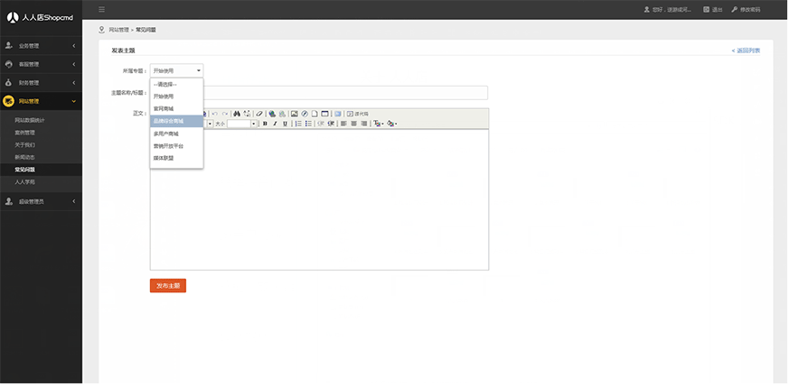

- 关于我们
- 联系我们
- 加入我们
- 新闻动态
- 关于人人店
- Paymax 为您提供一站式集成化支付接入解决方案，通过 Paymax 的 SDK，您可轻松连接任意 Paymax 支持的支付渠道，并通过交易管理平台监控、接任意 管理已开通渠道的所有交易Paymax 为您提供一站式集成化支付接入解决方案，通过 Paymax 的 SDK，您可轻松连接任意 Paymax 支持的支付渠道，并通过 交易管理平台监控、接任意 管理已开通渠道的所有交易
- 
-
移动APP支付：
您已经有自己的App，您的用户点击付款按钮后，在对应的App中完成支付，再跳回您的应用。
- Apple Pay：唤起手机支付控件（只适用于部分 iPhone 手机），在手机中完成支付。
- 支付宝移动支付：用户已经安装了支付宝客户端，跳转到支付宝客户端中完成支付，再返回您的应用。
- 微信移动 App：用户已经安装了微信客户端，跳转到微信中完成支付，再返回您的应用。
- 拉卡拉移动 SDK 支付：用户支付时无需跳转，在您的应用中完成支付 -
移动端网页：
您已经有自己的App，您的用户点击付款按钮后，在对应的App中完成支付，再跳回您的应用。 - Apple Pay：唤起手机支付控件（只适用于部分 iPhone 手机），在手机中完成支付。 - 支付宝移动支付：用户已经安装了支付宝客户端，跳转到支付宝客户端中完成支付，再返回您的应用。 - 微信移动 App：用户已经安装了微信客户端，跳转到微信中完成支付，再返回您的应用。 - 拉卡拉移动 SDK 支付：用户支付时无需跳转，在您的应用中完成支付
联系我们
加入我们
新闻动态